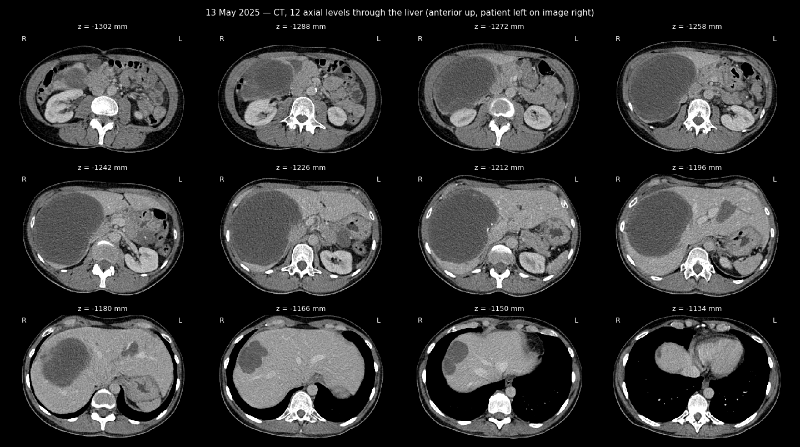
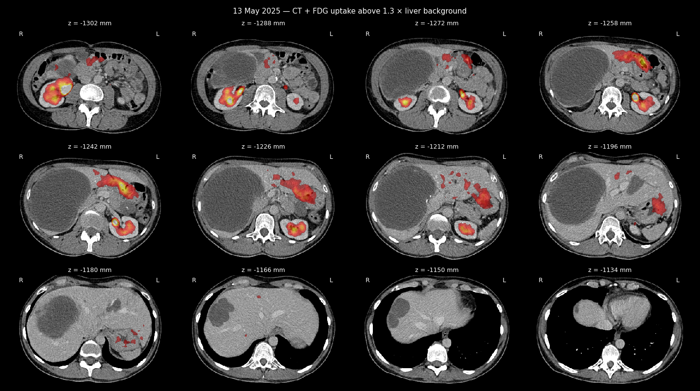

PET-CT with FDG (Feofaniya) — Ukrainian original
Google Drive: this document on Google Drive
English summary (the document itself is in Ukrainian):
Whole-body FDG PET-CT with contrast, 13.05.2025 (Feofaniya). No DICOM data of prior PET studies were provided for comparison. Reference values: mediastinal pool SUVmax 1.57, liver pool SUVmax 2.37. Head, neck and chest: no PET-positive pathology; single small subpleural nodules in the right lung up to 0.8 cm; port in the right subclavian vein. Liver: cystic formations, the largest in S VIII/S IV up to 6.2 × 4.0 cm and in S V/S IV up to 13.5 × 10 cm, ametabolic, with single peripheral calcification patterns, consistent with treated GIST. A similar cystic formation up to 3.3 × 2.8 cm under the cardia of the stomach, without reliable metabolism. Uterus unchanged; an ametabolic cystic formation up to 4.4 × 4.0 cm above the uterine body near the usual position of the right ovary. No lymphadenopathy, no bone destruction. Conclusion: changes correspond to the state after treatment, no active tissue or fresh patterns — PET negative. Signed: Dr. Ya. Kmetiuk (head of the centre), Dr. A. Ashykhmin.
Whole-body FDG PET-CT with contrast, 13.05.2025 (Feofaniya). No DICOM data of prior PET studies were provided for comparison. Reference values: mediastinal pool SUVmax 1.57, liver pool SUVmax 2.37. Head, neck and chest: no PET-positive pathology; single small subpleural nodules in the right lung up to 0.8 cm; port in the right subclavian vein. Liver: cystic formations, the largest in S VIII/S IV up to 6.2 × 4.0 cm and in S V/S IV up to 13.5 × 10 cm, ametabolic, with single peripheral calcification patterns, consistent with treated GIST. A similar cystic formation up to 3.3 × 2.8 cm under the cardia of the stomach, without reliable metabolism. Uterus unchanged; an ametabolic cystic formation up to 4.4 × 4.0 cm above the uterine body near the usual position of the right ovary. No lymphadenopathy, no bone destruction. Conclusion: changes correspond to the state after treatment, no active tissue or fresh patterns — PET negative. Signed: Dr. Ya. Kmetiuk (head of the centre), Dr. A. Ashykhmin.
PET-CT of 13 May 2025 — images from the study


22.05.25, 10:55 report_743db4be3c9cfffc0b06d5f7a7ab3f40
ВІДДІЛЕННЯ ПЕТ-КТ ДІАГНОСТИКИ
Пацієнт: Жерліцина Анастасія Станіславівна, 1976 р.н.
ПЕТ/КТ всього тіла з контрастним підсиленням
2025.05.13 / #53478/25
Внутрішньовенно введено F18ДГ - 277.29999 МБк, кат. - АД, ефективна доза ПЕТ - 5.3000002 м3в, КТ -
21.200001 м3в
Протокол дослідження:
Попередні дані: GIST тіла матки з mts в печінку, по очеревині 08/2022; ПХТ 4 цикли гемцитабін +
доцетаксел + авастін до 10/202; прогресія; ПХТ пазопаніб до 12.01.2023; прогресія з mts в печінку; ПХТ
трабектидін до 03/2023; прогресія; ПХТ іматініб 4 місяці до 08/2023; частковий регрес на ПЕТ/КТ; ПХТ
іматініб до 03/2025.
Контроль після лікування
Не надано Dicom дані попередніх ПЕТ для порівняння.
Референтні значення: медіастинальний пул - SUVmax 1,57; пул печінки - SUVmax 2,37.
Пневматизація верхньощелепних синусів не порушена.
Артефакти від дентальних конструкцій в області лицьового черепа.
Відмічається відносно симетричний метаболізм радіофармпрепарату в області піднебінних мигдаликів.
М’язи дна ротової порожнини симетричні.
Підщелепні лімфовузли одиничні до 0,5см, неактивні.
Глотка та гортань мають чіткі контури та нормальну товщину стінок.
Ознак шийної лімфаденопатії не виявлено; поодинокі дрібні лімфовузли в каротидних просторах, по
бічним відділам шиї, розміром до 0,7см, метаболічно неактивні.
Щитоподібна залоза не збільшена, структура звичайна.
Звичайний розподіл жирової та залозистої тканини в обох молочних залозах, без ПЕТ/КТ чутливої
патології.
В аксілярних ділянках та під грудними м’язами поодинокі лімфовузли до 1,2см з ознаками жирової
трансформації, без ознак метаболічної активності.
Порт в правій підключичній вені.
Ознак медіастинальної лімфаденопатії не виявлено, тканина переднього середостіння ущільнена. Трахея
та головні бронхи звичайні. Корені структурні.
Легені - по всім сегментам звичайної пневматизації, одиничні дрібні були справа в SI субплврально до
0,8см; інфільтративних та вогнищевих змін не виявлено. Рідина в плевральних порожнинах відсутня.
Куполи діафрагми звичайно розташовані.
Кістозні формації в печінці - найбільша в SVIII / SIV до 6,2х4,0см, та SV / SIV до 13,5х10см, аметаболічні,
по периферії з одиничними патернами звапнення; асоційовані з перенесеним лікуванням відомого GIST.
Під кардіальним відділом шлунку подібна кістозна формація до 3,3х2,8см; без достовірного метаболізму.
Селезінка розташована звичайно, не збільшена, без вогнищевих змін.
Підшлункова залоза виглядає звичайно, контур чіткий.
Наднирники не збільшені, форма збережена.
Нирки розташовані типово, їх паренхіма нормальної товщини. Чашково-мисковий комплекс, сечоводи
звичайної конфігурації.
Внутрішньочеревної та заочеревинної лімфаденопатії не виявлено.
Сечовий міхур адекватно наповнений.
Тіло та шийка матки на актуальному обстеженні виглядають незміненими, без видимої ПЕТ чутливої
патології. Над тілом матки по очеревині практично в місці звичайного розташування тканини правого
яєчника аметаболічна кістозна формація до 4,4х4,0см.
Тазової лімфаденопатії не виявлено.
В пахових ділянках лімфовузли до 1,0см, з ознаками жирової трансформації, метаболічно неактивні.
Кістково-деструктивні зміни не визначаються.
Висновок:
GIST з ураження матки, печінки, очеревини. Над тілом матки по очеревині аметаболічний кістозний
вузол, подібний вузол під кардіальним відділом шлунку також неактивний, кістозні формації в печінці
активності також не виявляють - зміни відповідають стану після ПХТ лікування, наразі активної тканини
чи "свіжих" патернів не виявлено. PET negative.
Керівник ВЦРХ, лікар-рентгенолог, лікар-радіолог Кметюк Я.В.
Лікар-рентгенолог, лікар-радіолог Ашихмін А.В.
10.8.15.202/index.php?r=research/ViewPrint&id=24616 1/1